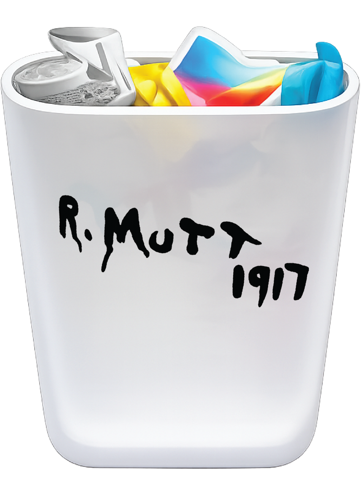

The Protocol
People come to this corner with a single purpose: to throw something away. They do it, and they leave. The site exists to be used without thought, and it is.
What I Wanted
To make someone stop. Not by changing the place, but by changing the frame around it. A museum caption confers a kind of institutional attention. It tells you that something here is worth looking at. Placed beside a recycling bin, it does the same thing. The place doesn't change. The looking does.
Duchamp signed a urinal and declared it art by the authority of his choice. There is no signature here. The caption says not "I chose this" but "this is here." It confers place, not authorship.
How the Experience Works
A caption card is placed on the wall beside the bin. It lists the title, materials, dimensions, and collection credit, in the exact format used by museums to tell you what to look at and how seriously to look at it.
The audio guide you just came from is part of the same gesture. If you listened without questioning it, the protocol worked on you too.